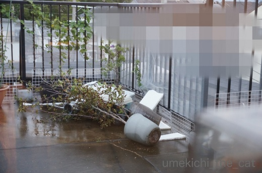
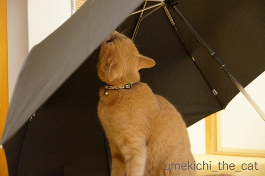
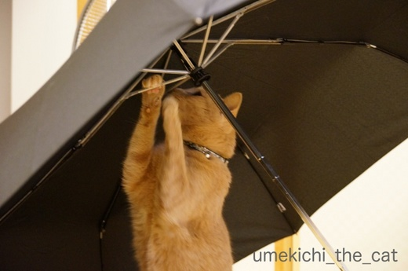
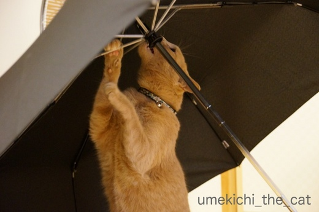
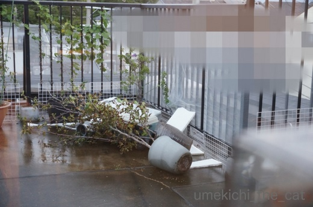
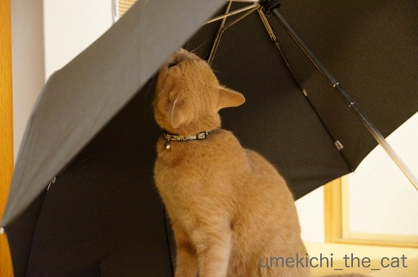
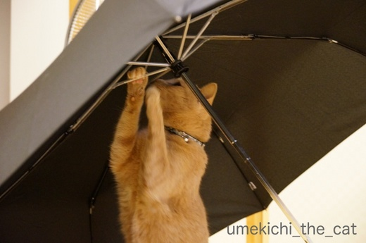
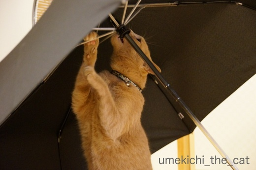

台風21号は洗車機のごとく [梅吉]
昨日はお昼過ぎからso-netの自分のブログや皆様のブログにアクセス出来ず。
夕方頃ちょぼちょぼと繋がりだしたのですが
コメントを投稿しようとするとエラー画面が出たり出なかったり・・・
夜にも状況は改善しなかったので皆様へのブログ訪問＆コメント返しが全然出来ておりません！
今日も午前中は全然ダメ。
（夜にブログ更新をされていた方もいるので不具合は家だけ！？）
サーバーのメンテナンスをしていたのでしょうか・・・長時間は困るなー。
これからぼちぼちとご訪問＆お返事をさせていただきますねm(_ _)m
･゜ﾟ･*:.｡..｡.:*･゜ﾟ･*:.｡. .｡.:*･゜ﾟ･*･゜ﾟ･*:.｡..｡.:*･゜ﾟ･*:.｡..｡.:*･゜ﾟ･* ･゜ﾟ･*:.｡..｡.:*･゜ﾟ･*
昨日の我が家地方は朝から本降りの雨だったのですが
台風21号が近づきだした夜の8時ごろからとんでもない雨と風。
警報発令のエリアメールの着信音はじゃんじゃん鳴るし
避難準備情報を知らせる警察の（？）広報車が走り回って落ち着かない雰囲気に。
ちなみに我が家は小高いところに立っているので避難の対象外。
100ｍくらい離れた低い地域では避難勧告が出ていました。
選挙の大勢もわかったしボクシングも決着がついたし
早めに寝ましょうとベッドに入ってからの強風と豪雨が更にがすごかった・・・
家ごとガソリンスタンドにある洗車機に放り込まれた感じ・・・
と例えればお解りいただけるでしょうか。
鉄筋コンクリートのマンションがわさわさと揺さぶられて
多少の雨風では聞かないような軋んだ音が一晩中していました。
梅吉も落ち着かなげに寝室の入り口のドアから玄関の方をみつめたり
窓の方へ近づいて外の様子を伺ったり・・・
ベッドに乗って来ても横にならない。香箱を組んで目を見開いたまま耳をピクピク。
私もほとんど眠れませんでしたが梅吉も眠れなかった様で
いつもは目覚ましアラームの前に私を起こすのに
今朝はアラーム音にびっくりして「むるっ！！！！」と鳴きながら目覚めてました^^;
で、起き出してベランダを見たらこの惨状(꒦ິ⌑꒦ີ)

大きな花鉢が倒れていろんなものが飛んで来たりして吹き溜まってます。
大阪近郊では大きな被害もありました。このくらいは被害に入りませんよね。。。。。
皆様のところはご無事でしょうか。
関東・東北では夕方以降がピークになるとか。
どうぞお気をつけくださいませ。
一晩中眠れなかった（はず）の梅吉さんは目覚めてから
我が家の被害をチェックし始めましたよ。

![[猫]](https://blog.ss-blog.jp/_images_e/101.gif) このかさはだいじょうぶやろか
このかさはだいじょうぶやろか

このへんのほねぐみが あぶないんちゃうか・・・

わしがかじってなおしとこ

ふうっ これでかんぺきや
はいはい。お仕事おつかれさまでした〜。
寝不足でもキリッとしてますよ♡
 ↑ガブッと一押し↑
↑ガブッと一押し↑
夕方頃ちょぼちょぼと繋がりだしたのですが
コメントを投稿しようとするとエラー画面が出たり出なかったり・・・
夜にも状況は改善しなかったので皆様へのブログ訪問＆コメント返しが全然出来ておりません！
今日も午前中は全然ダメ。
（夜にブログ更新をされていた方もいるので不具合は家だけ！？）
サーバーのメンテナンスをしていたのでしょうか・・・長時間は困るなー。
これからぼちぼちとご訪問＆お返事をさせていただきますねm(_ _)m
･゜ﾟ･*:.｡..｡.:*･゜ﾟ･*:.｡. .｡.:*･゜ﾟ･*･゜ﾟ･*:.｡..｡.:*･゜ﾟ･*:.｡..｡.:*･゜ﾟ･* ･゜ﾟ･*:.｡..｡.:*･゜ﾟ･*
昨日の我が家地方は朝から本降りの雨だったのですが
台風21号が近づきだした夜の8時ごろからとんでもない雨と風。
警報発令のエリアメールの着信音はじゃんじゃん鳴るし
避難準備情報を知らせる警察の（？）広報車が走り回って落ち着かない雰囲気に。
ちなみに我が家は小高いところに立っているので避難の対象外。
100ｍくらい離れた低い地域では避難勧告が出ていました。
選挙の大勢もわかったしボクシングも決着がついたし
早めに寝ましょうとベッドに入ってからの強風と豪雨が更にがすごかった・・・
家ごとガソリンスタンドにある洗車機に放り込まれた感じ・・・
と例えればお解りいただけるでしょうか。
鉄筋コンクリートのマンションがわさわさと揺さぶられて
多少の雨風では聞かないような軋んだ音が一晩中していました。
梅吉も落ち着かなげに寝室の入り口のドアから玄関の方をみつめたり
窓の方へ近づいて外の様子を伺ったり・・・
ベッドに乗って来ても横にならない。香箱を組んで目を見開いたまま耳をピクピク。
私もほとんど眠れませんでしたが梅吉も眠れなかった様で
いつもは目覚ましアラームの前に私を起こすのに
今朝はアラーム音にびっくりして「むるっ！！！！」と鳴きながら目覚めてました^^;
で、起き出してベランダを見たらこの惨状(꒦ິ⌑꒦ີ)

大きな花鉢が倒れていろんなものが飛んで来たりして吹き溜まってます。
大阪近郊では大きな被害もありました。このくらいは被害に入りませんよね。。。。。
皆様のところはご無事でしょうか。
関東・東北では夕方以降がピークになるとか。
どうぞお気をつけくださいませ。
一晩中眠れなかった（はず）の梅吉さんは目覚めてから
我が家の被害をチェックし始めましたよ。




はいはい。お仕事おつかれさまでした〜。
寝不足でもキリッとしてますよ♡

カフェオレ色の梅吉

梅吉 2023年8月10日 永眠


梅吉と出会った譲渡会

犬猫の理由なき殺処分ゼロ
妄想広告
UMEKICHI 光

爆発的に早い！
時々攻撃的！
Thanks to Mr.Boss365
爆発的に早い！
時々攻撃的！
Thanks to Mr.Boss365

夜中に台風が過ぎてくれたので良かったのですが
やっぱり眠れませんよね^^;
雨だけだと、うちは二重窓なのですごく静かですが
さすがに暴風雨はゴゴゴゴーって家がゆれるー(笑)
それなのに、ベランダに出しっぱなしにしていた猫のトイレは微動だにしてませんでした。（洗うつもりで出しておいて忘れてたｗ）
梅吉くんも外の様子が気になったんだね。
あおも夜中に「ねえねえ、起きてよー」って起こしに来ました。
抱っこして、和室の障子をあけてあげたら目をまん丸にして外の様子見てましたよ(笑)
by リュカ (2017-10-23 14:44)
私も夕べはあまり寝られませんでした。風で家が揺れましたよ～こんなに強風は久しぶりです( ﾟДﾟ)ネコたちも音が怖いのかナノは私の、きなこは息子の足もとに丸くなって寝てましたよ(^.^)
by palpal (2017-10-23 15:32)
風邪がすごかったですね~。うちではドンごろーは爆睡してましたが、コバンがなんとかして風神を鎮めようと一人で奮闘してました。梅吉さんはちぃさんを守ってるのですね。よい子じゃ~。
ソネブロは今日の午後まで自分の管理ページにも入れず、記事の下書きも出来ませんでした。情けないです。
by zombiekong (2017-10-23 16:35)
うちのにゃんずも雨風の音がする度に起きていたらしいです(*_*)
えぇ、かみさんと寝てるのでかみさんはほとんど寝かせてもらえなかったとか(>_<)
一緒に寝てもらえない私からすると、それすらも羨ましいんですけどね(-_-)
ソネブロ、昨夜記事書いてて「保存」しようと思ったら繋がらず(T_T)
慌ててメモしました(-_-)
by ニッキー (2017-10-23 16:48)
ソネブロ・・・長時間は本当に勘弁してほしいです。
せめて何時間かかると教えてくれれば
何回か覗きに来なくても助かるのですがね！
我が家の方は３時ごろがすごかったです。
避難準備警報も出ていて・・・
同じく寝不足です。
梅吉さんもいつもと違うと
不安でしたね。今日は
ゆっくり寝てくれますね♪
by きぃ (2017-10-23 17:40)
台風地方も被害出ました。何とか避難せぜにすんだので良かったですが。また復旧までには至らないところ多いです
by みぃにゃん (2017-10-23 18:39)
昨日の台風は凄かったですね！
東京は夜中に通過だったので、木造3階建ての我が家は揺れたと思うのですが熟睡してました(^^)
by ma2ma2 (2017-10-23 19:16)
ソネさん、昨夕方、少しの間だけ復活して、それっきりでした。
風が気になって寝れなく、この惨状かぁ…
本日は奈良と難波を結ぶ電車が１日中止まっていて、大変でございました。
by yamachan (2017-10-23 19:19)
関東ですが、こちらも昨夜はすごい音がしていました。
土砂降りという以上に‥ゴォーッと叩きつけるようなドラムみたいな音で。
夜中にうるさくて寝付けなかったです。
ソネブロにもずっと入れないし～
異常な音がしているので、大雨のせい？だとしたら仕方ないか、みたいな‥＾＾；
今日は庭も通りも葉っぱだらけ、うちのではない葉っぱ、しかも枝付きも落ちてました。異様な風が吹いていたので昼間は掃けず、暗くなってから掃きました。
by sana (2017-10-23 20:13)
ブログ、昨日昼過ぎから全く繋がりませんでした。情報もなく困りました(>_<)
やっと台風も通過したようで一安心です。
by kou (2017-10-23 20:36)
梅吉さん、傘のお手入れご苦労様です。^^;
台風、こちらは何とか無事でした。
やれやれ今年はもうこれで勘弁・・・と思ったら
南の海にまた気になる熱帯低気圧が。。。
ソネブロ、サーバー障害があったようですね。
昨晩は台風接近、だけどテレビ点けても開票速報ばかり、、
ブログ訪問も出来ず、、、で、
ただひたすら時間が過ぎるのを待っていました。^^;
by yes_hama (2017-10-23 21:12)
梅吉さんの傘姿？完璧ですね。
我が家は台風の被害はありませんでした。
by riverwalk (2017-10-23 23:39)
ちぃさんのところだけじゃないですよ。
私も昨日寝るまで障害が起きていました。so-netのTOPページは見れるのに
ブログには繋がらなくて、告知もなくなんだろうと思っていたの。
起きたら直ってるかな？と思ったけど、午後までダメでした＞＜
台風も怖かったよね。昨日は我が家地方も大変でした。
夜から夜中にかけて緊急速報や町内放送が何度もあり、
そのたびにくるみとタラと震えてました。ひなは穏やかに寝てたっけｗ
今日は一転。午後には日差しも出てきて穏やかな天気。
でも、また台風が近づいているみたい。被害が出ないといいのだけど。
梅吉くんも怖かったよね。寝不足はお昼寝で回復できたかな？
by emi (2017-10-23 23:47)
前回はタラの木が一本倒されましたが
今回は被害無しでした。
たくさんあった蜘蛛の巣も無傷でしたね。
恐るべし蜘蛛の糸＾＾；
うちの場合、室内で傘を干すと
骨が曲がり生地に小さな穴がたくさん開きます（爆）
by ぽちの輔 (2017-10-24 07:13)
こんにちは～。初めまして☆。
ほかの方のブログの nice! 欄で見かけた梅吉くんのアイコンに導かれて、
こちらのブログにお邪魔するようになりました、
まだまだ新参者のハリネズミと申します。
ずっとコメントを残したいなぁって思いつつ、
実はとても人見知りをするタチなもので、
すでにできあがってるっぽいお友達ブロガーさんとのやりとりを目にし、
いつも nice! だけで失礼しておりました～。
前振りが異様に長くなってしまいましたが、
そんな私が今日、コメントを残してみようと思ったのは、
この記事の記事数に反応してのこと。
２２２記事めｗ。
ゾロ目の上に語呂合わせはニャンニャンニャン
・・・・で、ついｗ。
はじめの一歩をようやく踏み出せたので、
これからはちょくちょくコメントを残させていただきますね♪。
by ハリネズミ (2017-10-24 08:27)
日曜日の関東も、風と雨がすごかったです。
植木は壁側にまとめてみたものの、かなり悲惨な風景。
とはいえ、周辺地域含め大きな被害がなかったのは、ひとまず安心でした。
月曜日からは、超久しぶりの晴れ間で、気持ちが和みました～(^^
午前中のソネットは、全くつながらず。。。うむむ。
梅吉さーん！ 迅速＆確実なお仕事ぶりは、さ・す・が♡
我が家の傘もチェックしていただきたいわ～♪
by morichan (2017-10-24 11:54)
締め切って換気口も全部閉じて、それでも時々ぶわんっ！と地響きのような風の音が響いて怖かったです。
こてつはコタツの中にこもって出て来ず、幸い近所には川も崖もなく、植木鉢も全部取り込み済み。耳栓をしたらぐっすり眠れました(^▽^;)
傘・・・折り畳み傘をリビングで畳もうとしたら、こてつのお手伝いが激しくて30分以上かかったことがありまーす♪
by ゆきち (2017-10-24 20:56)
おいたわしや鉢さん・・・
我が家方面は、思ったほどでもなかったような・・・
（ゴーゴーいってましたけどね）
前もって、ベランダの土物を撤去しておいてよかったです^^;
梅きっつぁん、ヨっ！傘職人っ！
so-net、またサーバーねばっこくなっていましたね。
わたしはあの日はすんなり諦めました・・・(｡-_-｡)
by Ja-Kou66 (2017-10-25 01:00)
梅吉さん、お仕事お疲れ様です。
これで梅吉くんちは安泰ですね＾＾
ベランダが大変なことになってしまいましたね。
植物たち、大丈夫かなぁ。
幸い、私の地方は特に大きな被害はなかったのですが、
時折風の音が強くて、私が怖かったくらいで、
あかりは何とも思ってなかったようです＾＾
by マーヤ (2017-10-25 01:03)
避難警報がでるほどだったんですね！大事にならなくて良かったですね。
にゃんこは耳が良いから、ドキドキしたんででしょうね・・・ゆっくりおやすみ・・・。
(*´ｪ`*)
by Ginger (2017-10-25 14:16)
リュカさん＞あ、二重窓なのね！うらやましい！！
北海道では当たり前の二重窓、複層ガラスが大阪では一般的じゃなくて
「なにこの安普請・・・」って思っちゃったわよw（北から目線w)
涼しい夏とストーブでぬくぬくと冬を過ごしてきた道産子には
大阪の初年度はサバイバルだったなぁ (^▽^;)
台風の夜、梅吉もお目目まん丸で、後ろから頭をつんっ！てしたら
目が飛び出るんじゃないかと思いましたー。
猫トイレ、飛んでかなくて良かったね(≧▽≦)
palpalさん＞台風すごいよ！って予報で言っていても
我が家はいつも事もなし・・・だったので油断していました (-_-メ)
ナノくんもきなこちゃんもお嬢さんのところじゃなかったんだ！！
ブラックお嬢さんが２にゃんさんにぶつぶつ言ってなかった？(*>艸<)
zombiekongさん＞そうそう！
お天気が荒れる時梅吉も興奮して走り回っていることがあります。
あれは風神さんを鎮めようと頑張っているのねーΣ(ﾟ◇ﾟ；)
そして寝ずの番もしてくれる・・・梅吉、ええこや・・・(꒦ິ⌑꒦ີ)
ソネブロ不調、ソネブロ歴の長い方は
「また」「いつもの」っておっしゃってたから
これからもちょくちょくあるのでしょうね。。。
ニッキーさん＞ゴッドマザー様も眠れずに過ごされたのですね・・・
にゃんずさん共々お疲れ様でした。
ニッキーさんはまた失意を。。。が、がんばれー (^▽^;)
ソネブロは不具合が多いと聞いていましたが本当なんですねー。
ブログ記事は別箇所にメモしてからコピペしようかしら・・・
きぃさん＞ソネブロ、せめて時間を教えてください！ですよね〜。
自分だけの不具合で皆様に失礼をするんじゃないかと
ドキドキしちゃいました^^;
台風通過時、きぃさんのところも大変な地域だったのですね。
何かあっても避難はしない、と決めているのでわたわたすることは
ありませんでしたが、眠れないのは辛かったです。。。
みぃにゃんさん＞お家の周りではいろいろ被害も出ているようですね。。。
川も増水しているようなのでもうしばらくは気が抜けないかもしれませんね。
ロッキーくんのお散歩時もお気をつけて・・・
ma2ma2さん＞当初の予報円よりも少し東にずれて関東付近を通過したようで・・・
予報通りだったら熟睡できなかったかもしれませんよー。
なにも被害がなくてなによりでした＾＾
yamachanさん＞関西一円、まだまだ交通網が乱れているようですね。
観光客も右往左往していそうな・・・
ソネブロ不調、よくあることなんですね。一つ学習しましたm(_ _)m
sanaさん＞私もベランダの惨状は大物だけ先に始末して
細かいものは風がおさまってから片付けました。
我が家は自分の家から出た物のみお片づけでしたが
sanaさんは近所から飛んできた葉っぱまでのお片づけとは・・・
おつかれさまでしたm(_ _)m
kouさん＞ソネブロから何か一言お知らせが欲しかったですよね〜。
今日ソネブロ公式ブログを見たら「サーバー障害がありました」と
アップされていましたが・・・^^;
途中経過も知らせて欲しかったな・・・・と。
日本海側は今回は影響は少なかったようですね＾＾良かった！！
yes_hamaさん＞そちらはご無事でしたか＾＾
アズ氏も心穏やかに過ごされたようで何よりです。
そう思ったら今度は22号がやってきそうな・・・
弱りに目祟り目なんて勘弁して欲しいですねー。
ソネブロ、ことが起こると長引くことが多そうなので
今度不調になったらサクッと諦めてしまおうと思っています^^;
riverwalkさん＞傘を部屋干しすると必ずやってくるんですよねー。
何をする訳でもなく（あ、この日はメンテでしたが）
じーっとしています。
傘＝梅吉ホイホイと呼んでますw
emiさん＞私だけつながらない？うちのネット回線がおかしいのかと
一瞬焦りましたよー。
他のHPが見られたので「犯人はソネブロやな！」となりましたけど^^;
障害が起きるのはしょうがないのでせめて「何時頃復旧予定」と
教えてくれるとありがたいよねw
台風通過時はそちらも大変でしたか。
雨と風の音、あれだけでビビっちゃうよね・・・・
ひなちゃん、肝が座ってるわー＾＾
梅吉の寝不足は翌午前中の爆睡で解消したようですが
私がなかなか。
１日で疲れが取れないっていやねーwwwww
ぽちの輔さん＞蜘蛛の巣、台風で一掃された方が助かったのでは^^;
ほうきで払ってもいつまでもまとわりついて困りますし。
ホント、恐るべし蜘蛛の糸ですw
傘の室内干し、我が家も要監視です!
ハリネズミさん＞コメントありがとうございます♪
遠慮なんかせずにどんどんコメントしてくださいよ〜。
大歓迎ですからＯ(≧▽≦)Ｏ
222記事、全然気づいていませんでしたΣ(ﾟ◇ﾟ；)
教えていただいてありがとうございます。
222の記事の日にハリネズミさんがコメントをくださる・・・
これはにゃんこが結んでくれたご縁に違いありませんね(๑˃̵ᴗ˂̵)و
梅吉も茶トラ系だし・・・(*>艸<)
morichanさん＞morichanさんのお家もベランダに花鉢が沢山ありますよね。
被害がなかったようで何よりでした＾＾
我が家は今回はちょっと油断しちゃいました・・・orz
大阪は今日9時ごろからやっと安定した青空が！お日様ってありがたい(≧▽≦)
梅吉メンテが終わったので傘はお日様に向かって干しましたw
ゆきちさん＞本当にすごい台風でしたよね。
私が長いこと過ごした札幌はあまり台風被害の出ないところだったので
台風怖い、と思ったのは初めての体験でした。
今回は台風への備えが手ぬるかったのも反省です^^;
ゆきちさんが耳栓をして寝る・・・ということは
こてつくんの状況も改善していると！善きことかなー(๑˃̵ᴗ˂̵)و
Ja-Kou66さん＞花鉢、鉢が割れなかったのが不幸中の幸いでした。
今回は「脅かしておいていつも何もないし！」という甘い気持ちが
惨事になっちゃいました。反省・・・
サーバー障害、ソネブロ公式ブログを見ても
「障害がありました。すいません。でもそれが何か？」な感じがしました (⌒_⌒;
次に何かあったら私もサクッと諦めることにしますw
マーヤさん＞ブログにアップした大きな鉢は派手に見えた割には
ほとんど実害がなくて良かったです。
が、我が家には他におっとの趣味の小品盆栽が沢山あって
そちらが結構悲惨なことに・・・
あかりちゃん・・・大物女子ですね！！
Gingerさん＞生まれて初めて訓練じゃないエリアメールを受け取りました。
我が家は避難警報外だったのですがやっぱりどきどきしました・・・
梅吉も不安げな顔をしていましたよ。感じるものがあるのでしょうね。
翌午前中は白目で爆睡していましたよ(*>艸<)
by ちぃ (2017-10-25 21:01)
台風は大変でしたね。
福岡は大変だという脅しはありましたので、緊張していました。
夜中の2時過ぎには強風警報が出たりしていましたが、庭の樹々はピクリともしないままでした。
次の日は直撃はそれましたが、雨と風が強めでした。
我が家では夫がベランダの敷板を部屋に入れた写真を送ってくれました。
ちぃさん家の倒れた花鉢さんたちは元気になったのでしょうか？
by kiki (2017-10-25 22:22)
kikiさん＞今回は油断していましたorz
いつも脅かされる割には何もないから・・・と。反省。
ブログにアップした花鉢は派手に倒れていた割にはダメージが少なかったのですが
写真に撮らなかった小品盆栽の方がやられてました^^;
大阪のご自宅はご主人が活躍されたのですねー。
いつもkikiさんが腰や肩を痛くしながらする作業
「大変だな・・・」と思っていただけたかな？
写真を送ってくださったなんて「やったでー！どやー！！」
だったのでしょうか(*>艸<)
by ちぃ (2017-10-26 12:41)